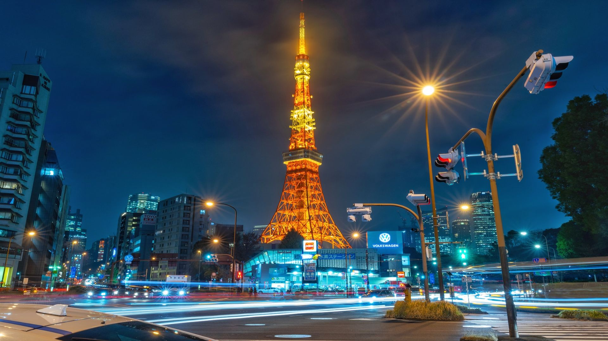

Tenney Park
With its friendly atmosphere and impressive display of storybook scenery Tenney Park serves as a
place to socialize, a peaceful recluse, and a place to just be. It's an excellent place to watch
boats launch, seagulls flock, let the children play at the park, or just catch up on some reading.

Tokyo Tower
A symbol of post war recovery in the center of the city. Built in 1958, Tokyo Tower serves as a
symbol of Tokyo's rebirth after World War II.The tower is surrounded by notable temples and parks,
and is neighbored by Roppongi, Shiodome, Toranomon, and Shinagawa, all worthwhile destinations in
their own right.